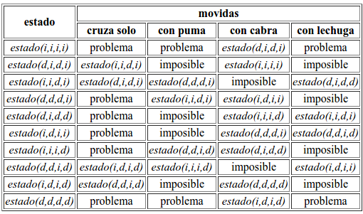
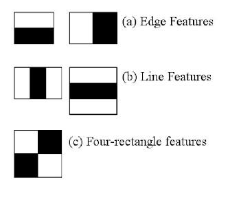
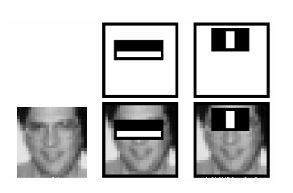
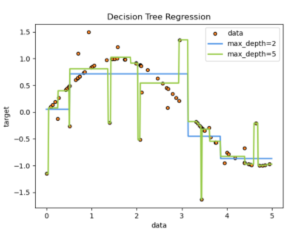

Apuntes IA
Table of Contents
- Inteligencia Artificial
- Algoritmo A*
- Análisis de información
- Espacio de estados
- Ejemplo de espacio de estados
- Representación de espacio de estados
- El problema del n-Puzzle
- Técnicas de Búsqueda
- Satisfacción de restricciones.
- Teoría de juegos.
- Grafos
- Tipos de grafos
- Machine Learning
Inteligencia Artificial
La inteligencia artificial (IA) es un área multidisciplinaria que, a través de ciencias como las ciencias de la computación, la lógica y la filosofía, estudia la creación y diseño de entidades capaces de resolver cuestiones por sí mismas utilizando como paradigma la inteligencia humana.
General y amplio como eso, reúne a amplios campos, los cuales tienen en común la creación de máquinas capaces de pensar. En ciencias de la computación se denomina inteligencia artificial a la capacidad de razonar de un agente no vivo. John McCarthy acuñó la expresión inteligencia artificial en 1956, y la definió así: Es la ciencia e ingenio de hacer máquinas inteligentes, especialmente programas de cómputo inteligentes.
- Búsqueda del estado requerido en el conjunto de los estados producidos por las acciones posibles.
- Algoritmos genéticos (análogo al proceso de evolución de las cadenas de ADN).
- Redes neuronales artificiales (análogo al funcionamiento físico del cerebro de animales y humanos).
- Razonamiento mediante una lógica formal análogo al pensamiento abstracto humano.
También existen distintos tipos de percepciones y acciones, que pueden ser obtenidas y producidas, respectivamente, por sensores físicos y sensores mecánicos en máquinas, pulsos eléctricos u ópticos en computadoras, tanto como por entradas y salidas de bits de un software y su entorno software. Varios ejemplos se encuentran en el área de control de sistemas, planificación automática, la habilidad de responder a diagnósticos y a consultas de los consumidores, reconocimiento de escritura, reconocimiento del habla y reconocimiento de patrones. Los sistemas de IA actualmente son parte de la rutina en campos como economía, medicina, ingeniería y la milicia, y se ha usado en gran variedad de aplicaciones de software, juegos de estrategia, como ajedrez de computador, y otros videojuegos.
Categorías de la Inteligencia Artificial
- Sistemas que piensan como humanos. Estos sistemas tratan de emular el pensamiento humano; por ejemplo las redes neuronales artificiales. La automatización de actividades que vinculamos con procesos de pensamiento humano, actividades como la Toma de decisiones, Resolución de problemas y aprendizaje.
- Sistemas que actúan como humanos: Estos sistemas tratan de actuar como humanos; es decir, imitan el comportamiento humano; por ejemplo la robótica. El estudio de cómo lograr que los computadores realicen tareas que, por el momento, los humanos hacen mejor.7
- Sistemas que piensan racionalmente.- Es decir, con lógica (idealmente), tratan de imitar o emular el pensamiento lógico racional del ser humano; por ejemplo los sistemas expertos. El estudio de los cálculos que hacen posible percibir, razonar y actuar.8
- Sistemas que actúan racionalmente (idealmente).– Tratan de emular de forma racional el comportamiento humano; por ejemplo los agentes inteligentes.Está relacionado con conductas inteligentes en artefactos.9
Inteligencia artificial convencional
Se conoce también como IA simbólico-deductiva. Está basada en el análisis formal y estadístico del comportamiento humano ante diferentes problemas:
- Razonamiento basado en casos: Ayuda a tomar decisiones mientras se resuelven ciertos problemas concretos y, aparte de que son muy importantes, requieren de un buen funcionamiento.
- Sistemas expertos: Infieren una solución a través del conocimiento previo del contexto en que se aplica y ocupa de ciertas reglas o relaciones.
- Redes bayesianas: Propone soluciones mediante inferencia probabilística.
- Inteligencia artificial basada en comportamientos: Esta inteligencia contiene autonomía y puede auto-regularse y controlarse para mejorar.
- Smart process management: Facilita la toma de decisiones complejas, proponiendo una solución a un determinado problema al igual que lo haría un especialista en la dicha actividad.
Algoritmo A*
La heurística de búsqueda A* (pronunciado "A asterisco", "A estrella" o "A star" en inglés) se clasifica dentro de los algoritmos de búsqueda en grafos de tipo heurístico o informado. Presentado por primera vez en 1968 por Peter E. Hart, Nils J. Nilsson y Bertram Raphael, el algoritmo A* encuentra, siempre y cuando se cumplan unas determinadas condiciones, el camino de menor coste entre un nodo origen y uno objetivo.
Análisis de información
Programación
Con el siguiente ejemplo, se puede cargar una imagen, utilizando la librería de opencv, mediante el método imread, el cual carga en la variable img la imagen contenida en el directorio que se puede observar en la linea 2 de igual forma el método imshow permite mostrar la imagen, dando como primer parámetro, el nombre del marco y posteriormente el nombre de la imagen, finalmente se utiliza el método waitKey permite mostrar una ventana durante un número específico de milisegundos o hasta que se presione cualquier tecla
import cv2 as cv img = cv.imread("/home/likcos/Imágenes/tr.png") cv.imshow('marco', img) cv.waitKey() cv.destroyAllWindows()
Espacio de estados
Muchos de los problemas que pueden ser resueltos aplicando técnicas de inteligencia artificial se modelan en forma simbólica y discreta definiendo las configuraciones posibles del universo estudiado. El problema se plantea entoces en términos de encontrar una configuración objetivo a partir de una configuración inicial dada, aplicando transformaciones válidas según el modelo del universo. La respuesta es la secuencia de transformaciones cuya aplicación succesiva lleva a la configuración deseada.
Los ejemplos más carácteristicos de esta categoría de problemas son los juegos (son universos restringidos fáciles de modelar). En un juego, las configuraciones del universo corresponden directamente a las configuraciones del tablero. Cada configuración es un estado que puede ser esquematizado gráficamente y representado en forma simbólica. Las transformaciones permitidas corresponden a las reglas o movidas del juego, formalizadas como transiciones de estado.
Entonces, para plantear formalmente un problema, se requiere precisar una representación simbólica de los estados y definir reglas del tipo condición acción para cada una de las transiciones válidas dentro del universo modelado. La acción de una regla indica como modificar el estado actual para generar un nuevo estado. La condición impone restricciones sobre la aplicabilidad de la regla según el estado actual, el estado generado o la historia completa del proceso de solución.
El espacio de estados de un juego es un grafo cuyos nodos representan las configuraciones alcanzables (los estados válidos) y cuyos arcos explicitan las movidas posibles (las transiciones de estado). En principio, se puede construir cualquier espacio de estados partiendo del estado inicial, aplicando cada una de las reglas para generar los sucesores immediatos, y así succesivamente con cada uno de los nuevos estados generados (en la práctica, los espacios de estados suelen ser demasiado grandes para explicitarlos por completo).
Cuando un problema se puede representar mediante un espacio de estados, la solución computacional correspende a encontrar un camino desde el estado inicial a un estado objetivo.
Ejemplo de espacio de estados
Descripción del problema
Un arriero se encuentra en el borde de un rio llevando un puma, una cabra y una lechuga. Debe cruzar a la otra orilla por medio de un bote con capacidad para dos (el arriero y alguna de sus pertenecias). La dificultad es que si el puma se queda solo con la cabra la devorará, y lo mismo sucederá si la cabra se queda sola con la lechuga. ¿Cómo cruzar sin perder ninguna pertenencia?
Representación de las configuraciones del universo del problema:
Basta precisar la situación antes o después de cruzar. El arriero y cada una de sus pertenencias tienen que estar en alguna de las dos orillas. La representación del estado debe entonces indicar en que lado se encuentra cada uno de ellos. Para esto se puede utilizar un término simbólico con la siguiente sintáxis: estado(A,P,C,L), en que A, P, C y L son variables que representan, respectivamente, la posición del arriero, el puma, la cabra y la lechuga. Las variables pueden tomar dos valores: i y d, que simbolizan respectivamente el borde izquierdo y el borde derecho del rio. Por convención se elige partir en el borde izquierdo. El estado inicial es entonces estado(i,i,i,i). El estado objetivo es estado(d,d,d,d).
Definición de las reglas de transición:
El arriero tiene cuatro acciones posibles: cruzar solo, cruzar con el puma, cruzar con la cabra y cruzar con la lechuga. Estas acciones están condicionadas a que ambos pasajeros del bote estén en la misma orilla y a que no queden solos el puma con la cabra o la cabra con la lechuga. El estado resultante de una acción se determina intercambiando los valores i y d para los pasajeros del bote.
Generación del espacio de estados
En este ejemplo se puede explicitar todo el espacio de estados (el número de configuraciones está acotado por 24).

Problemas de los Canibales y Monjes
Se tienen 3 monjes y 3 caníbales en el margen Oeste de un río. Existe
una canoa con capacidad para dos personas como máximo. Se desea que
los seis pasen al margen Este del río, pero hay que considerar que no
debe haber más caníbales que monjes en ningún sitio porque entonces
los caníbales se comen a los monjes. Además, la canoa siempre debe ser
conducida por alguien.
El espacio de estados está definido por
{(Mo, Co, Me, Ce, C) / Mo es el número de monjes en el margen oeste con
0<=Mo<=3
AND Co es el número de caníbales en el margen oeste con 0<=Co<=3
AND (Co<=Mo OR Mo=0)
AND Me es el número de monjes en el margen este con
0<=Me<=3
AND Ce es el número de caníbales en el margen este con 0<=Ce<=3
AND (Ce<=Me OR Me=0) AND Co+Ce=3 AND Mo+Me=3 AND C = [E|O] es el margen dónde está la canoa}
El estado inicial es (3,3,0,0,O)
El estado final es (0,0,3,3,E)
Las reglas que se pueden aplicar son:
- Viajan un monje y un caníbal de O a E: Si (Mo, Co, Me, Ce, O) AND Mo>=1 AND Co>=1 AND Ce+1<=Me+1 => (Mo-1, Co-1, Me+1, Ce+1, E)
- Viajan un monje y un caníbal de E a O: Si (Mo, Co, Me, Ce, E) AND Me>=1 AND Ce>=1 AND Co+1<=Mo+1=> (Mo+1, Co+1, Me-1, Ce-1,O)
- Viajan dos monjes de O a E: Si (Mo, Co, Me, Ce, O) AND Mo>=2 AND (Mo-2=0 OR Co<=Mo-2) AND Ce<=Me+2=> (Mo-2, Co, Me+2, Ce, E)
- Viajan dos monjes de E a O: Si (Mo, Co, Me, Ce, E) AND Me>=2 AND (Me-2=0 OR Ce<=Me-2) AND Co<=Mo+2 => (Mo+2, Co, Me-2, Ce, O)
- Viajan dos caníbales de O a E: Si (Mo, Co, Me, Ce, O) AND Co>=2 AND (Me=0 OR Ce+2<=Me) => (Mo, Co-2, Me, Ce+2, E)
- Viajan dos caníbales de E a O: Si (Mo, Co, Me, Ce, E) AND Ce>=2 AND (Mo=0 OR Co+2<=Mo) => (Mo, Co+2, Me, Ce-2, O)
- Viaja un monje de O a E: Si (Mo, Co, Me, Ce, O) AND Mo>=1 AND (Mo-1=0 OR Co<=Mo-1) AND Ce<= Me+1 => (Mo-1, Co, Me+1, Ce, E)
- Viaja un monje de E a O: Si (Mo, Co, Me, Ce, E) AND Me>=1 AND (Me-1=0 OR Ce<=Me-1) AND Co<=Mo+1 => (Mo+1, Co, Me-1, Ce,O)
- Viaja un caníbal de O a E: Si (Mo, Co, Me, Ce, O) AND Co>=1 AND (Me=0 OR Ce+1<=Me) => (Mo, Co-1, Me, Ce+1, E)
- Viaja un caníbal de E a O: Si (Mo, Co, Me, Ce, O) AND Ce>=1 AND (Mo=0 OR Co+1<=Mo) => (Mo, Co+1, Me, Ce-1, E)
Nota: En referencia a la regla 3 la condición Ce<=Me+2 puede intuirse como redundante. Esta condición no se cumple sólo en el caso Ce=3 y Me=0. Pese a
que es un estado que pertenece al espacio de estados válidos, podemos intuir que nunca se llega a tener 3 caníbales y ningún monje del lado Este y la barca del lado Oeste. De todas maneras sólo se puede eliminar si podemos demostrar formalmente la imposibilidad de esta situación.
Un pasaje de estados para ir de (3,3,0,0,O) a (0,0,3,3,E) es el siguiente:
(3,3,0,0,O) => (3,1,0,2,E) => (3,2,0,1,O) => (3,0,0,3,E) => (3,1,0,2,O) => (1,1,2,2,E) => (2,2,1,1,O) => (0,2,3,1,E) => (0,3,3,0,O) => (0,1,3,2,E) => (0,2,3,1,O) =>(0,0,3,3,E)
Representación de espacio de estados
La primera pregunta es, como
El problema del n-Puzzle
Caracterización de las búsquedas ciegas.
La búsqueda ciega o no informada sólo utiliza información acerca de si un estado es o no objetivo para guiar su procesu de búsqueda.
Los métodos de búsqueda ciega se pueden clasificar en dos grupos básicos:
- Métodos de búsqueda en anchura: Son procedimientos de búsqueda nivel a nivel. Para cada uno de los nodos de un nivel se aplican todos los posibles operadores y no se expande ningún nodo de un nivel antes de haber expandido todos los del nivel anterior.
- Métodos de búsqueda en profundidad: En estos procedimientos se realiza la búsqueda por una sola rama del árbol hasta encontrar una solución o hasta que se tome la decisión de terminar la búsqueda por esa dirección ( por no haber posibles operadores que aplicar sobre el nodo hoja o por haber alcanzado un nivel de profundidad muy grande ) . Si esto ocurre se produce una vuelta atrás ( backtracking ) y se sigue por otra rama hasta visitar todas las ramas del árbol si es necesario.
A partir de los dos tipos de búsqueda anteriores surgió uno nuevo, llamado método de búsqueda por profundización iterativa. El algoritmo de búsqueda más representativo de esta nueva tendencia es el DFID acrónimo de su nombre en inglés (Depth-First Iterative-Deepening).
Caracterización de las búsquedas heurísticas.
Las técnicas de búsqueda heurística se apoyan alc contrario de los métodos de búsqueda ciega se apoyan en información adicional para realizar su proceso de búsqueda. Para mejorar la eficiencia de la búsqueda, estos algoritmos hacen uso de una función que realiza una predicción del coste necesario para alcanzar la solución. La función que guía el proceso toma el nombre de función heurística.
De todos los algoritmos de búsqueda heurística, uno destaca en especial: el A*. Este algoritmo, a pesar de haber sido creado entorno a los años 60, sigue en la actualidad siendo uno de los mas utilizados. Desafortunadamente, es ineficiente en cuanto al uso de memoria durante el proceso de búsqueda. Por ello, en las décadas de los 80 y 90, aparecieron algoritmos basados en el propio A*, pero que limitaban el uso de memoria. Dos de los algoritmos más representativos de esta última tendencia son el IDA* (Iterative-Deepening A*) y el SMA* (Simplified Memory-bounded A*).
Técnicas de Búsqueda
Solución de problemas con búsqueda.
La solución de problemas es fundamental para la mayoría de las aplicaciones de IA; existen principalmente dos clases de problemas que se pueden resolver mediante procesos computables: aquéllos en los que se utiliza un algoritmo determinista que garantiza la solución al problema y las tareas complejas que se resuelven con la búsqueda de una solución; de ésta última clase de problemas se ocupa la IA.
La solución de problemas requiere dos consideraciones:
- Representación del problema en un espacio organizado.
- La capacidad de probar la existencia del estado objetivo en dicho espacio.
Las anteriores premisas se traducen en: la determinación del estado objetivo y la determinación del camino óptimo guiado por este objetivo a través de una o más transiciones dado un estado inicial
El espacio de búsqueda, se le conoce como una colección de estados. En general los espacios de búsqueda en los problemas de IA no son completamente conocidos de forma a priori. De lo anterior ‘resolver un problema de IA’ cuenta con dos fases:\\[0.5cm]
- La generación del espacio de estados
- La búsqueda del estado deseado en ese espacio.
Debido a que "todo el espacio de búsqueda" de un problema es muy grande, puede causar un bloqueo de memoria, dejando muy poco espacio para el proceso de búsqueda. Para solucionar esto, se expande el espacio paso a paso, hasta encontrar el estado objetivo.
Espacios de Estados
Muchos de los problemas que pueden ser resueltos aplicando técnicas de inteligencia artificial se modelan en forma simbólica y discreta definiendo las configuraciones posibles del universo estudiado. El problema se plantea entonces en términos de encontrar una configuración objetivo a partir de una configuración inicial dada, aplicando transformaciones válidas según el modelo del universo. La respuesta es la secuencia de transformaciones cuya aplicación succesiva lleva a la configuración deseada. Los ejemplos más carácteristicos de esta categoría de problemas son los juegos (son universos restringidos fáciles de modelar). En un juego, las configuraciones del universo corresponden directamente a las configuraciones del tablero. Cada configuración es un estado que puede ser esquematizado gráficamente y representado en forma simbólica. Las transformaciones permitidas corresponden a las reglas o movidas del juego, formalizadas como transiciones de estado. Entonces, para plantear formalmente un problema, se requiere precisar una representación simbólica de los estados y definir reglas del tipo condición acción para cada una de las transiciones válidas dentro del universo modelado. La acción de una regla indica como modificar el estado actual para generar un nuevo estado. La condición impone restricciones sobre la aplicabilidad de la regla según el estado actual, el estado generado o la historia completa del proceso de solución. El espacio de estados de un juego es un grafo cuyos nodos representan las configuraciones alcanzables (los estados válidos) y cuyos arcos explicitan las movidas posibles (las transiciones de estado). En principio, se puede construir cualquier espacio de estados partiendo del estado inicial, aplicando cada una de las reglas para generar los sucesores immediatos, y así succesivamente con cada uno de los nuevos estados generados (en la práctica, los espacios de estados suelen ser demasiado grandes para explicitarlos por completo). Cuando un problema se puede representar mediante un espacio de estados, la solución computacional correspende a encontrar un camino desde el estado inicial a un estado objetivo.
Deterministicos
El espacio de estados determinísticos contienen un único estado inicial y seguir la secuencia de estados para la solución. Los espacios de estados determinísticos son usados por los sistemas expertos. Se puede describir asu vez, que un sistema es determinístico si, para un estado dado, al menos aplica una regla a él y de solo una manera.
No Deterministicos
El no determinístico contiene un amplio número de estados iniciales y sigue la secuencia de estados perteneciente al estado inicial del espacio. Son usados por sistemas de lógica difusa. En otras palabras, si más de una regla aplica a cualquier estado particular del sistema, o si una regla aplica a un estado particular del sistema en más de una manera, entonces el sistema es no determinístico.
Métodos de Búsqueda
Primero en anchura (breadthfirst)
En inglés, breadth-first search. Si el conjunto open se maneja como una lista FIFO, es decir, como una cola, siempre se estará visitando primero los primeros estados en ser generados. El recorrido del espacio de estados se hace por niveles de profundidad.
procedure Busqueda_en_amplitud { open ()[estado_inicial] closed () {} while (open no esta vacia) { remover el primer estado X de la lista open if (X es un estado objetivo) return exito else { generar el conjunto de sucesores del estado X agregar el estado X al conjunto closed eliminar sucesores que ya estan en open o en closed agregar el resto de los sucesores al final de open } } return fracaso }
Si el factor de ramificación es B y la profundidad a la cual se encuentra el estado objetivo más cercano es n, este algoritmo tiene una complejidad en tiempo y espacio de \(O(B^n)\). Contrariamente a la búsqueda en profundidad, la búsqueda en amplitud garantiza encontrar el camino más corto.
Primero en profundidad (depthfirst).
En inglés, depth-first search. Si el conjunto open se maneja como una lista LIFO, es decir, como un stack, siempre se estará visitando primero los últimos estados en ser generados. Esto significa que si A genera B y C, y B genera D, antes de visitar C se visita D, que está más alejado de la raiz A, o sea más profundo en el árbol de búsqueda. El algoritmo tiene en este caso la tendencia de profundizar la búsqueda en una rama antes de explorar ramas alternativas.
procedure Busqueda_en_profundidad { open () [estado_inicial] closed () {} while (open no esta vacia) { remover el primer estado X de la lista open if (X es un estado objetivo) return exito else { generar el conjunto de sucesores del estado X agregar el estado X al conjunto closed eliminar sucesores que ya estan en open o en closed agregar el resto de los sucesores al principio de open } } return fracaso }
Considerando que la cantidad promedio de sucesores de los nodos visitados es B (llamado en inglés el branching factor y en castellano el factor de ramificación), y suponiendo que la profundidad máxima alcanzada es n, este algoritmo tiene una complejidad en tiempo de \(O(B^n)\) y, si no se considera el conjunto closed, una complejidad en espacio de O(B × n). En vez de usar el conjunto closed, el control de ciclos se puede hacer descartando aquellos estados que aparecen en el camino generado hasta el momento (basta que cada estado generado tenga un puntero a su padre). El mayor problema de este algoritmo es que puede "perderse" en una rama sin encontrar la solución. Además, si se encuentra una solución no se puede garantizar que sea el camino más corto.
Búsqueda Heurística
El algoritmo de búsqueda A* (pronunciado "A asterisco", "A estrella" o
"Astar" en inglés) se clasifica dentro de los algoritmos de búsqueda
en grafos de tipo heurístico o informado. Presentado por primera vez
en 1968 por Peter E. Hart, Nils J. Nilsson y Bertram Raphael, el
algoritmo A* encuentra, siempre y cuando se cumplan unas determinadas
condiciones, el camino de menor coste entre un nodo origen y uno
objetivo.
El problema de algunos algoritmos de búsqueda en grafos informados, como puede ser el algoritmo voraz, es que se guían en exclusiva por la función heurística, la cual puede no indicar el camino de coste más bajo, o por el coste real de desplazarse de un nodo a otro (como los algoritmos de escalada), pudiéndose dar el caso de que sea necesario realizar un movimiento de coste mayor para alcanzar la solución. Es por ello bastante intuitivo el hecho de que un buen algoritmo de búsqueda informada debería tener en cuenta ambos factores, el valor heurístico de los nodos y el coste real del recorrido.
Así, el algoritmo A* utiliza una función de evaluación \(f(n)=g(n)+h'(n)\), donde \(h'(n)\) representa el valor heurístico del nodo a evaluar desde el actual, n, hasta el final, y \(g(n)\) \(g(n)\), el coste real del camino recorrido para llegar a dicho nodo, n, desde el nodo inicial. A* mantiene dos estructuras de datos auxiliares, que podemos denominar abiertos, implementado como una cola de prioridad (ordenada por el valor \(f(n)\) de cada nodo), y cerrados, donde se guarda la información de los nodos que ya han sido visitados. En cada paso del algoritmo, se expande el nodo que esté primero en abiertos, y en caso de que no sea un nodo objetivo, calcula la \(f(n)\) de todos sus hijos, los inserta en abiertos, y pasa el nodo evaluado a cerrados.
El algoritmo es una combinación entre búsquedas del tipo primero en anchura con primero en profundidad: mientras que \(h'(n)\) tiende a primero en profundidad, \(g(n)\) tiende a primero en anchura. De este modo, se cambia de camino de búsqueda cada vez que existen nodos más prometedores.
- Propiedades
Como todo algoritmo de búsqueda en amplitud, A* es un algoritmo completo: en caso de existir una solución, siempre dará con ella.
Si para todo nodo n del grafo se cumple \(g(n)=0\), nos encontramos ante una búsqueda voraz. Si para todo nodo n del grafo se cumple \(h(n)=0\), A* se comporta como el algoritmo de Dijkstra.
Para garantizar la admisibilidad del algoritmo, la función \(h(n)\) debe ser heurística admisible, esto es, que no sobrestime el coste real de alcanzar el nodo objetivo, es decir, h(n) debe ser menor que h*(n) para todo nodo no final.
Se garantiza que \(h(n)\) es consistente (o monótona), es decir, que para cualquier nodo \(n\) y cualquiera de sus sucesores, el coste estimado de alcanzar el objetivo desde n no es mayor que el de alcanzar el sucesor más el coste de alcanzar el objetivo desde el sucesor.
- Complejidad
La complejidad computacional del algoritmo está íntimamente relacionada con la calidad de la heurística que se utilice en el problema. En el caso peor, con una heurística de pésima calidad, la complejidad será exponencial, mientras que en el caso mejor, con una buena \(h'(n)\), el algoritmo se ejecutará en tiempo lineal. Para que esto último suceda, se debe cumplir que
\[ h'(x)\leq g(y)-g(x)+h'(y)\] donde h' es una heurística óptima para el problema, como por ejemplo, el coste real de alcanzar el objetivo.
El espacio requerido por A* para ser ejecutado es su mayor problema. Dado que tiene que almacenar todos los posibles siguientes nodos de cada estado, la cantidad de memoria que requerirá será exponencial con respecto al tamaño del problema. Para solucionar este problema, se han propuesto diversas variaciones de este algoritmo, como pueden ser RTA*, IDA* o SMA*.
Satisfacción de restricciones.
Los problemas pueden resolverse buscando en un espacio de estados, estos estados pueden evaluarse por heurísticas específicas para el dominio y probados para verificar si son estados meta. Los componentes del estado, son equivalentes a un grafo de restricciones, los cuales están compuestos de:\\[0.5cm]
- Variables: Dominios (valores posibles para las variables).
- Restricciones (binarias) entre las variables.
Objetivo: encontrar un estado (una asignación completa de valores a las variables) Que satisface las restricciones.
En los Problemas de Satisfacción de Restricciones (PSR), los estados y la prueba de meta siguen a una representación estándar, estructurada y muy simple.
Ejemplos:
- Crucigramas
- Colorear mapas
Teoría de juegos.
Siendo una de las principales capacidades de la inteligencia humana su capacidad para resolver problemas, así como la habilidad para analizar los elementos esenciales de cada problema, abstrayéndolos, el identificar las acciones que son necesarias para resolverlos y el determinar cuál es la estrategia más acertada para atacarlos, son rasgos fundamentales.
Podemos definir la resolución de problemas como el proceso que partiendo de unos datos iníciales y utilizando un conjunto de procedimientos escogidos, es capaz de determinar el conjunto de pasos o elementos que nos llevan a lo que denominaremos una solución óptima o semi-óptima de un problema de planificación, descubrir una estrategia ganadora de un juego, demostrar un teorema, reconocer
Una imagen, comprender una oración o un texto son algunas de las tareas que pueden concebirse como de resolución.
Una gran ventaja que nos proporciona la utilización de los juegos es que a través de ellos es muy fácil medir el éxito o el fracaso, por lo que podemos comprobar si las técnicas y algoritmos empleados son los óptimos. En comparación con otras aplicaciones de inteligencia artificial, por ejemplo comprensión del lenguaje, los juegos no necesitan grandes cantidades de algoritmos. Los juegos más utilizados son las damas y el ajedrez.
Grafos
Un grafo es un conjunto de puntos (vértices) en el espacio, que están conectados por un conjunto de líneas (aristas). Otros conceptos básicos son: Dos vértices son adyacentes si comparten la misma arista. Los extremos de una arista son los vértices que comparte dicha arista. Un grafo se dice que es finito si su número de vértices es finito.
Tipos de grafos
Existen dos tipos de grafos los no dirigidos y los dirigidos.
• No dirigidos: son aquellos en los cuales los lados no están orientados (No son flechas). Cada lado se representa entre paréntesis, separando sus vértices por comas, y teniendo en cuenta (Vi,Vj)=(Vj,Vi).
• Dirigidos: son aquellos en los cuales los lados están orientados (flechas). Cada lado se representa entre ángulos, separando sus vértices por comas y teniendo en cuenta <Vi ,Vj>!=<Vj ,Vi>. En grafos dirigidos, para cada lado <A,B>, A, el cual es el vértice origen, se conoce como la cola del lado y B, el cual es el vértice destino, se conoce como cabeza del lado.
Machine Learning
El aprendizaje automático o aprendizaje automatizado o aprendizaje de máquinas (del inglés, machine learning) es el subcampo de las ciencias de la computación y una rama de la inteligencia artificial, cuyo objetivo es desarrollar técnicas que permitan que las computadoras aprendan. Se dice que un agente aprende cuando su desempeño mejora con la experiencia y mediante el uso de datos; es decir, cuando la habilidad no estaba presente en su genotipo o rasgos de nacimiento.1 "En el aprendizaje de máquinas un computador observa datos, construye un modelo basado en esos datos y utiliza ese modelo a la vez como una hipótesis acerca del mundo y una pieza de software que puede resolver problemas".
En muchas ocasiones el campo de actuación del aprendizaje automático se solapa con el de la estadística inferencial, ya que las dos disciplinas se basan en el análisis de datos. Sin embargo, el aprendizaje automático incorpora las preocupaciones de la complejidad computacional de los problemas. Muchos problemas son de clase NP-hard, por lo que gran parte de la investigación realizada en aprendizaje automático está enfocada al diseño de soluciones factibles a esos problemas. El aprendizaje automático también está estrechamente relacionado con el reconocimiento de patrones. El aprendizaje automático puede ser visto como un intento de automatizar algunas partes del método científico mediante métodos matemáticos. Por lo tanto es un proceso de inducción del conocimiento.
El aprendizaje automático tiene una amplia gama de aplicaciones, incluyendo motores de búsqueda, diagnósticos médicos, detección de fraude en el uso de tarjetas de crédito, análisis del mercado de valores, clasificación de secuencias de ADN, reconocimiento del habla y del lenguaje escrito, juegos y robótica.
Tipos de Algoritmos
Los diferentes algoritmos de Aprendizaje Automático se agrupan en una taxonomía en función de la salida de los mismos. Algunos tipos de algoritmos son:
- Aprendizaje supervisado : El algoritmo produce una función que establece una correspondencia entre las entradas y las salidas deseadas del sistema. Un ejemplo de este tipo de algoritmo es el problema de clasificación, donde el sistema de aprendizaje trata de etiquetar (clasificar) una serie de vectores utilizando una entre varias categorías (clases). La base de conocimiento del sistema está formada por ejemplos de etiquetados anteriores. Este tipo de aprendizaje puede llegar a ser muy útil en problemas de investigación biológica, biología computacional y bioinformática.
- Aprendizaje no supervisado: Todo el proceso de modelado se lleva a cabo sobre un conjunto de ejemplos formado tan solo por entradas al sistema. No se tiene información sobre las categorías de esos ejemplos. Por lo tanto, en este caso, el sistema tiene que ser capaz de reconocer patrones para poder etiquetar las nuevas entradas.
- Aprendizaje semisupervisado: Este tipo de algoritmos combinan los dos algoritmos anteriores para poder clasificar de manera adecuada. Se tiene en cuenta los datos marcados y los no marcados.
- Aprendizaje por refuerzo: El algoritmo aprende observando el mundo que le rodea. Su información de entrada es el feedback o retroalimentación que obtiene del mundo exterior como respuesta a sus acciones. Por lo tanto, el sistema aprende a base de ensayo-error. El aprendizaje por refuerzo es el más general entre las tres categorías. En vez de que un instructor indique al agente qué hacer, el agente inteligente debe aprender cómo se comporta el entorno mediante recompensas (refuerzos) o castigos, derivados del éxito o del fracaso respectivamente. El objetivo principal es aprender la función de valor que le ayude al agente inteligente a maximizar la señal de recompensa y así optimizar sus políticas de modo a comprender el comportamiento del entorno y a tomar buenas decisiones para el logro de sus objetivos formales. Los principales algoritmos de aprendizaje por refuerzo se desarrollan dentro de los métodos de resolución de problemas de decisión finitos de Markov, que incorporan las ecuaciones de Bellman y las funciones de valor. Los tres métodos principales son: la Programación Dinámica, los métodos de Monte Carlo y el aprendizaje de Diferencias Temporales. Entre las implementaciones desarrolladas está AlphaGo, un programa de IA desarrollado por Google DeepMind para jugar el juego de mesa Go. En marzo de 2016 AlphaGo le ganó una partida al jugador profesional Lee Se-Dol que tiene la categoría noveno dan y 18 títulos mundiales. Entre los algoritmos que utiliza se encuentra el árbol de búsqueda Monte Carlo, también utiliza aprendizaje profundo con redes neuronales. Puede ver lo ocurrido en el documental de Netflix “AlphaGo”.
- Transducción: Similar al aprendizaje supervisado, pero no construye de forma explícita una función. Trata de predecir las categorías de los futuros ejemplos basándose en los ejemplos de entrada, sus respectivas categorías y los ejemplos nuevos al sistema.
- Aprendizaje multi-tarea: Métodos de aprendizaje que usan conocimiento previamente aprendido por el sistema de cara a enfrentarse a problemas parecidos a los ya vistos. El análisis computacional y de rendimiento de los algoritmos de aprendizaje automático es una rama de la estadística conocida como teoría computacional del aprendizaje. El aprendizaje automático las personas lo llevamos a cabo de manera automática ya que es un proceso tan sencillo para nosotros que ni nos damos cuenta de cómo se realiza y todo lo que implica. Desde que nacemos hasta que morimos los seres humanos llevamos a cabo diferentes procesos, entre ellos encontramos el de aprendizaje por medio del cual adquirimos conocimientos, desarrollamos habilidades para analizar y evaluar a través de métodos y técnicas así como también por medio de la experiencia propia. Sin embargo, a las máquinas hay que indicarles cómo aprender, ya que si no se logra que una máquina sea capaz de desarrollar sus habilidades, el proceso de aprendizaje no se estará llevando a cabo, sino que solo será una secuencia repetitiva.
Técnicas de clasificación
- Árboles de decisiones: Este tipo de aprendizaje usa un árbol de decisiones como modelo predictivo. Se mapean observaciones sobre un objeto con conclusiones sobre el valor final de dicho objeto. Los árboles son estructuras básicas en la informática. Los árboles de atributos son la base de las decisiones. Una de las dos formas principales de árboles de decisiones es la desarrollada por Quinlan de medir la impureza de la entropía en cada rama, algo que primero desarrolló en el algoritmo ID3 y luego en el C4.5. Otra de las estrategias se basa en el índice GINI y fue desarrollada por Breiman, Friedman et alia. El algoritmo de CART es una implementación de esta estrategia.5
- Reglas de asociación: Los algoritmos de reglas de asociación procuran descubrir relaciones interesantes entre variables. Entre los métodos más conocidos se hallan el algoritmo a priori, el algoritmo Eclat y el algoritmo de Patrón Frecuente.
- Algoritmos genéticos: Los algoritmos genéticos son procesos de búsqueda heurística que simulan la selección natural. Usan métodos tales como la mutación y el cruzamiento para generar nuevas clases que puedan ofrecer una buena solución a un problema dado.
- Redes neuronales artificiales: Las redes de neuronas artificiales (RNA) son un paradigma de aprendizaje automático inspirado en las neuronas de los sistemas nerviosos de los animales. Se trata de un sistema de enlaces de neuronas que colaboran entre sí para producir un estímulo de salida. Las conexiones tienen pesos numéricos que se adaptan según la experiencia. De esta manera, las redes neurales se adaptan a un impulso y son capaces de aprender. La importancia de las redes neurales cayó durante un tiempo con el desarrollo de los vectores de soporte y clasificadores lineales, pero volvió a surgir a finales de la década de 2000 con la llegada del aprendizaje profundo.
- Máquinas de vectores de soporte: Las MVS son una serie de métodos de aprendizaje supervisado usados para clasificación y regresión. Los algoritmos de MVS usan un conjunto de ejemplos de entrenamiento clasificado en dos categorías para construir un modelo que prediga si un nuevo ejemplo pertenece a una u otra de dichas categorías.
Algoritmos de agrupamiento El análisis por agrupamiento (clustering en inglés) es la clasificación de observaciones en subgrupos —clusters— para que las observaciones en cada grupo se asemejen entre sí según ciertos criterios. Las técnicas de agrupamiento hacen inferencias diferentes sobre la estructura de los datos; se guían usualmente por una medida de similitud específica y por un nivel de compactamiento interno (similitud entre los miembros de un grupo) y la separación entre los diferentes grupos.
El agrupamiento es un método de aprendizaje no supervisado y es una técnica muy popular de análisis estadístico de datos.
- Redes bayesianas Una red bayesiana, red de creencia o modelo acíclico dirigido es un modelo probabilístico que representa una serie de variables de azar y sus independencias condicionales a través de un grafo acíclico dirigido. Una red bayesiana puede representar, por ejemplo, las relaciones probabilísticas entre enfermedades y síntomas. Dados ciertos síntomas, la red puede usarse para calcular las probabilidades de que ciertas enfermedades estén presentes en un organismo. Hay algoritmos eficientes que infieren y aprenden usando este tipo de representación.
Clasificador en Cascada
La detección de objetos usando un clasificador en cascada basado en características de Haar es un método efectivo de detección de objetos propuesto en 2001 por Paul Viola y Michael Jones en su artículo "Detección rápida de objetos usando cascada mejorada de características simples". Este es un método basado en el aprendizaje automático en el que se entrena una función en cascada a partir de muchas imágenes positivas y negativas. Luego se usa para detectar objetos en otras imágenes.
El algoritmo requiere una gran cantidad de imágenes positivas (imágenes faciales) e imágenes negativas (no imágenes faciales) para entrenar al clasificador. Luego, necesitamos extraer características de él. Para hacer esto, use la función Haar que se muestra en la siguiente figura. Son como nuestros núcleos de convolución. Cada característica es un valor único que se obtiene restando la suma de píxeles debajo del rectángulo blanco de la suma de píxeles debajo del rectángulo negro.

Ahora, todos los tamaños y posiciones posibles de cada kernel se utilizan para calcular muchas funciones. (Imagínese cuántos cálculos genera. Incluso una ventana de 24x24 generará más de 160.000 características). Para el cálculo de cada característica, necesitamos encontrar la suma de los píxeles debajo de los rectángulos blanco y negro. Para resolver este problema, introdujeron la imagen general. No importa qué tan grande sea su imagen, reducirá el cálculo de un píxel dado a operaciones que involucren solo cuatro píxeles.
Pero de todas estas características que calculamos, la mayoría de ellas no son relevantes. Por ejemplo, considere la siguiente figura. La primera fila muestra dos buenas características. La primera característica elegida pareció centrarse en la naturaleza del área de los ojos, que generalmente es más oscura que las áreas de la nariz y las mejillas. La segunda característica elegida se basa en que las propiedades de los ojos son más oscuras que el puente de la nariz. Sin embargo, aplicar la misma ventana en las mejillas o en cualquier otro lugar es irrelevante. Entonces, ¿cómo elegimos la mejor función entre más de 160.000 funciones?.

Para ello, aplicamos todas las funciones a todas las imágenes de entrenamiento. Para cada característica, encontrará el mejor umbral, que divide el rostro en positivo y negativo. Obviamente, habrá errores o clasificaciones erróneas. Elegimos las características con la tasa de error más baja, lo que significa que son las características más precisas para clasificar imágenes faciales y no faciales. (Este proceso no es tan simple. Al principio, el peso de cada imagen es igual. Después de cada clasificación, el peso de la imagen mal clasificada aumentará. Luego se realizará el mismo proceso. Se calculará la nueva tasa de error. También calcular Peso nuevo. Continúe con este proceso hasta que se alcance la precisión o la tasa de error requeridas o se encuentre el número requerido de funciones.
El clasificador final es la suma ponderada de estos clasificadores débiles. Se denomina clasificación débil porque no puede clasificar imágenes por sí sola, sino que forma un clasificador fuerte junto con otras clasificaciones. El documento dice que incluso 200 funciones pueden proporcionar una detección de precisión del 95%. Su configuración final tiene aproximadamente 6000 funciones. (Imagínese reducir de más de 160.000 funciones a 6.000 funciones. Esto es una gran ganancia).
Entonces ahora toma una foto. Toma cada ventana de 24x24. Aplicarle 6000 funciones. Busque caras. Vaya … ¿No es esto ineficiente y requiere mucho tiempo? Si. El autor tiene una buena solución para esto.
En la imagen, la mayoría de las imágenes son áreas sin caras. Por lo tanto, es mejor tener una manera fácil de verificar si la ventana no es un área frontal. Si no es así, deséchelo todo de una vez y no lo vuelva a procesar. En cambio, concéntrese en las áreas que pueden tener caras. De esta forma, dedicaremos más tiempo a comprobar posibles zonas faciales.
Con este fin, introdujeron el concepto de clasificadores en cascada. En lugar de aplicar los 6000 componentes funcionales a una ventana, estos componentes funcionales se agrupan en diferentes etapas de clasificación y se aplican uno por uno. (Por lo general, las primeras etapas contendrán muy pocas funciones). Si la ventana falla en la primera etapa, se descarta. No consideramos sus funciones restantes. Si pasa, se aplica la segunda etapa de la función y el proceso continúa. La ventana a través de todas las etapas es un área facial. ¡Qué tal este plan!
El detector del autor tiene más de 6000 características con 38 etapas, con 1, 10, 25, 25 y 50 características en las primeras cinco etapas. (Las dos funciones en la imagen de arriba son en realidad las dos mejores funciones obtenidas de Adaboost). Según el autor, cada subventana evaluó un promedio de 10 características de más de 6000 características.
Por lo tanto, esta es una explicación simple e intuitiva del principio de funcionamiento de la detección de rostros Viola-Jones. Lea este artículo para obtener más detalles o consulte las referencias en la sección de otros recursos.
Ejemplo de clasificación utilizando Haarcascades
import numpy as np import cv2 as cv rostro = cv.CascadeClassifier('haarcascade_frontalface_alt.xml') cap = cv.VideoCapture(0) x=y=w=h= 0 img = 0 count = 0 while True: ret, frame = cap.read() gray = cv.cvtColor(frame, cv.COLOR_BGR2GRAY) rostros = rostro.detectMultiScale(gray, 1.3, 5) for(x, y, w, h) in rostros: m= int(h/2) frame = cv.rectangle(frame, (x,y), (x+w, y+h), (0, 255, 0), 2) frame = cv.rectangle(frame, (x,y+m), (x+w, y+h), (255, 0 ,0), 2 ) img = 180- frame[y:y+h,x:x+w] count = count + 1 #name = '/home/likcos/imgs/cara'+str(count)+'.jpg' #cv.imwrite(name, frame) cv.imshow('rostros', frame) cv.imshow('cara', img) k = cv.waitKey(1) if k == 27: break cap.release() cv.destroyAllWindows()
Segmentación de Color
La segmentación de imágenes es un tema ampliamente estudiado para la extracción y reconocimiento de objetos, de acuerdo a las características de textura, color, forma, entre otros. Dependiendo de la naturaleza del problema, las características de color de los objetos pueden proporcionar información relevante sobre ellos. Por ejemplo, la segmentación de imágenes de color ha sido aplicado en diferentes áreas como análisis de alimentos, geología, medicina entre otras. Los trabajos que abordan la segmentación de imágenes por características de color emplean diferentes técnicas, pero las más empleadas son las redes neuronales (RN) y métodos basado en agrupamiento, específicamente, fuzzy c-means (FCM). Las RN son entrenadas para reconocer colores específicos, es decir, estas son entrenadas con los colores de la imagen a ser segmentada. Si se da una nueva imagen la RN debe ser entrenada nuevamente. Al emplear métodos basados en agrupamiento, se crean grupos de colores con características similares. La desventaja con tales métodos es que se requiere definir previamente la cantidad de grupos en que se divide la información; por lo tanto, el número de grupos se define dependiendo de la naturaleza de la escena. Nuestra propuesta consiste en entrenar a la RN para reconocer diferentes colores, tratando de emular la percepción humana del color. Los seres humanos identifican principalmente los colores por su cromaticidad, después por su intensidad [21]. Por ejemplo, si se le pregunta a cualquier persona cual es el color de los cuadros (a) y (b) de la Fig. 1, lo más seguro es que responderá “verde”; nótese que el cuadro (a) es más brilloso que el cuadro (b) pero la cromaticidad no cambia. Ahora, si se le vuelve a preguntar a esa misma persona cual es el color de los cuadros (c) y (d) de la Fig. 1, lo más seguro es que responda “rojo y rosa, respectivamente”; es importante mencionar que los cuadros (c) y (d) tienen la misma intensidad pero diferentes cromaticidades.
Árboles de decisión
Los árboles de decisión (DT) son un método de aprendizaje supervisado no paramétrico que se utiliza para la clasificación y la regresión. El objetivo es crear un modelo que prediga el valor de una variable de destino mediante el aprendizaje de reglas de decisión simples deducidas de las características de los datos. Un árbol puede verse como una aproximación constante por partes.
en el siguiente ejemplo, los árboles de decisión aprenden de los datos para aproximarse a una curva sinusoidal con un conjunto de reglas de decisión if-then-else. Cuanto más profundo es el árbol, más complejas son las reglas de decisión y más ajustado es el modelo

Elementos
Los árboles de decisión están formados por nodos, vectores de números, flechas y etiquetas.
- Cada nodo se puede definir como el momento en el que se ha de tomar una decisión de entre varias posibles, lo que va haciendo que a medida que aumenta el número de nodos aumente el número de posibles finales a los que puede llegar el individuo. Esto hace que un árbol con muchos nodos sea complicado de dibujar a mano y de analizar debido a la existencia de numerosos caminos que se pueden seguir.
- Los vectores de números serían la solución final a la que se llega en función de las diversas posibilidades que se tienen, dan las utilidades en esa solución.
- Las flechas son las uniones entre un nodo y otro y representan cada acción distinta.
- Las etiquetas se encuentran en cada nodo y cada flecha y dan nombre a cada acción.
Algunas ventajas de los árboles de decisión son:
- Fácil de entender y de interpretar. Los árboles se pueden visualizar.
- Requiere poca preparación de datos. Otras técnicas a menudo requieren la normalización de datos, es necesario crear variables ficticias y eliminar valores en blanco. Sin embargo, tenga en cuenta que este módulo no admite valores faltantes.
- El costo de usar el árbol (es decir, predecir datos) es logarítmico en la cantidad de puntos de datos usados para entrenar el árbol.
- Capaz de manejar datos numéricos y categóricos. Otras técnicas suelen estar especializadas en analizar conjuntos de datos que tienen un solo tipo de variable.
- Capaz de manejar problemas de múltiples salidas.
- Utiliza un modelo de caja blanca. Si una situación dada es observable en un modelo, la explicación de la condición se explica fácilmente mediante lógica booleana. Por el contrario, en un modelo de caja negra (por ejemplo, en una red neuronal artificial), los resultados pueden ser más difíciles de interpretar.
- Posibilidad de validar un modelo mediante pruebas estadísticas. Eso permite dar cuenta de la fiabilidad del modelo.
- Tiene un buen desempeño incluso si sus supuestos son algo violados por el verdadero modelo a partir del cual se generaron los dato
Desventajas de los árboles de decisión:
- El aprendizaje de los árboles de decisión pueden crear árboles demasiado complejos que no generalizan bien los datos. Esto se llama sobreajuste. Para evitar este problema, son necesarios mecanismos como la poda, establecer el número mínimo de muestras requeridas en un nudo de la hoja o establecer la profundidad máxima del árbol.
- Los árboles de decisión pueden ser inestables porque pequeñas variaciones en los datos pueden generar un árbol completamente diferente. Este problema se mitiga mediante el uso de árboles de decisión dentro de un conjunto.
- Las predicciones de los árboles de decisión no son uniformes ni continuas, sino aproximaciones constantes por partes, como se ve en la figura anterior. Por lo tanto, no son buenos para la extrapolación.
- Se sabe que el problema de aprender un árbol de decisión óptimo es NP-completo bajo varios aspectos de optimización e incluso para conceptos simples. En consecuencia, los algoritmos prácticos de aprendizaje del árbol de decisiones se basan en algoritmos heurísticos, como el algoritmo voraz, en el que se toman decisiones localmente óptimas en cada nodo. Dichos algoritmos no pueden garantizar la devolución del árbol de decisión globalmente óptimo. Esto se puede mitigar entrenando varios árboles en un alumno de conjunto, donde las características y las muestras se muestrean aleatoriamente con reemplazo.
- Hay conceptos que son difíciles de aprender porque los árboles de decisión no los expresan fácilmente, como XOR, paridad o problemas de multiplexor.
- Los aprendices de árboles de decisión crean árboles sesgados si dominan algunas clases. Por lo tanto, se recomienda equilibrar el conjunto de datos antes de ajustarlo al árbol de decisión.
Ejemplo de Clasificación, Árbol de decisión scikit-learn
DecisionTreeClassifier es una clase capaz de realizar una clasificación de varias clases en un conjunto de datos.
Al igual que con otros clasificadores, DecisionTreeClassifier toma como entrada dos matrices: una matriz X, dispersa o densa, de forma (nmuestras, ncaracterísticas) que contiene las muestras de entrenamiento, y una matriz Y de valores enteros, forma (nmuestras), que contiene las etiquetas de clase. para las muestras de entrenamiento:
from sklearn import tree X = [[0, 0], [1, 1]] Y = [0, 1] clf = tree.DecisionTreeClassifier() clf = clf.fit(X, Y) clf.predict([[2.,2.]])
Despues de ajustarce el modelo se puede usar, para predecir la clase
clf.predict([[2.,2.]]) #array([1])
En caso de que haya múltiples clases con la misma y mayor probabilidad, el clasificador predecirá la clase con el índice más bajo entre esas clases.
Como alternativa a generar una clase específica, se puede predecir la probabilidad de cada clase, que es la fracción de muestras de entrenamiento de la clase en una hoja:
clf.predict_proba([[2., 2.]]) #array([[0., 1.]])
DecisionTreeClassifier es capaz tanto de clasificación binaria (donde las etiquetas son [-1, 1]) como de clasificación multiclase (donde las etiquetas son [0, …, K-1]).
Usando el conjunto de datos de Iris, podemos construir un árbol de la siguiente manera:
from sklearn.datasets import load_iris from sklearn import tree import graphviz iris = load_iris() X, y = iris.data, iris.target clf = tree.DecisionTreeClassifier() clf = clf.fit(X, y) #dot_data = tree.export_graphviz(clf, out_file=None) #graph = graphviz.Source(dot_data) #graph.render("iris") dot_data = tree.export_graphviz(clf, out_file=None, feature_names=iris.feature_names, class_names=iris.target_names, filled=True, rounded=True, special_characters=True) graph = graphviz.Source(dot_data) graph.view()
print("Hola")